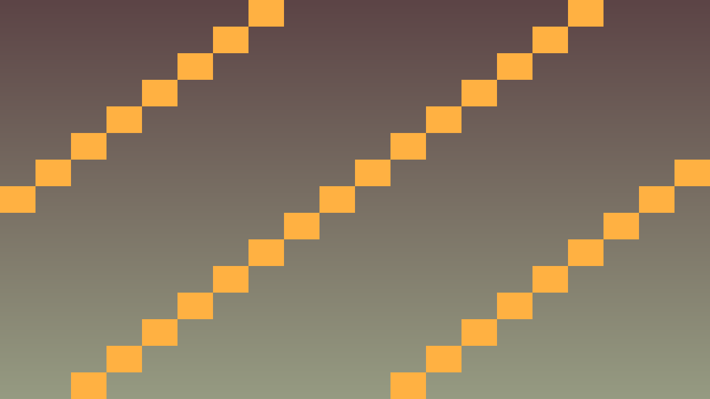
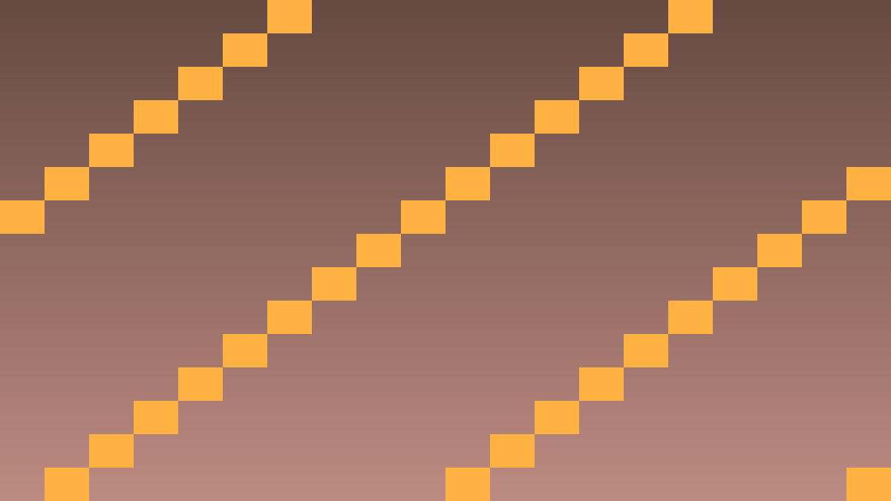

Tavs šīs stundas izaicinājums: Uzrakstīt pirmo strādājošu C++ klasi un attiecināt to uz Godot Node.
Priekšzināšanu robeža: uzdevumos izmanto tikai iepriekš apgūto un šīs lapas teorijas/koda piemēros parādīto. Ja parādās jauna komanda vai rīks, vispirms atrod tās paraugu teorijas blokā.
Godot C++ klase tiek definēta divos failos: .hpp (header) un .cpp (implementation). Header fails pasaka, kas klase ir un kādas metodes tai ir; implementation fails pasaka, ko šīs metodes dara. Šāds dalījums ir būtisks C++ valodā, jo kompilators katru failu apstrādā atsevišķi.
Lai Godot redzētu C++ klasi kā node tipu, klasei jāmanto no Godot klases, piemēram, Node vai Node2D, jāizmanto GDCLASS makro un jābūt reģistrētai ar ClassDB::register_class. Bez reģistrācijas C++ kods var kompilēties, bet Godot editorā klase neparādīsies.
// hello.hpp
#pragma once
#include <godot_cpp/classes/node.hpp>
#include <godot_cpp/variant/string.hpp>
namespace godot {
class Hello : public Node {
GDCLASS(Hello, Node)
private:
int counter = 0;
String player_name = "Pong Player";
protected:
static void _bind_methods();
public:
Hello();
~Hello();
void _ready() override;
void say_hello();
};
} // namespace godotPamata C++ datu tipi:
| Tips | Apraksts |
|---|---|
int | Vesels skaitlis |
float | Decimālskaitlis 32-bit |
bool | true/false |
String | Godot virkne |
Vector2 | 2D vektors (x, y) |
Dzīves cikls: konstruktors sagatavo C++ objektu, _ready() tiek izsaukts, kad node jau ir scēnā, bet _bind_methods() savieno C++ metodes ar Godot atspoguļošanas sistēmu. Spēles sākumā visdrošāk testēt izvadi ar UtilityFunctions::print.
70 min darba sadalījums: 1. uzdevums (~20 min) — izveido minimālo piemēru, kas pārbauda šīs stundas galveno ideju; 2. uzdevums (~25 min) — integrē risinājumu tēmas spēles projektā; 3. uzdevums (~25 min) — notestē robežgadījumus, salabo kļūdas un pieraksti secinājumu README vai komentārā. Tālāk redzamie soļi ir detalizēta karte šiem trim uzdevumiem; ja laiks beidzas, papildu pulēšanu atstāj nākamajai reizei.
Izveido, reģistrē un palaiž pielāgotu Hello klasi.
gdext/src izveido failu hello.hpp.#pragma once, lai header netiktu iekļauts vairākas reizes.<godot_cpp/classes/node.hpp>, jo klase mantos no Node.<godot_cpp/variant/string.hpp>, ja klasē lietosi String.namespace godot, lai lietotu Godot C++ tipus bez liekas kvalifikācijas.class Hello : public Node un pievieno GDCLASS(Hello, Node).int counter = 0 un String player_name = "Pong Player".static void _bind_methods();._ready() un say_hello().hello.cpp tajā pašā mapē.hello.cpp iekļauj "hello.hpp", <godot_cpp/core/class_db.hpp> un <godot_cpp/variant/utility_functions.hpp>._bind_methods() un piesaisti say_hello ar ClassDB::bind_method.counter vērtību iestata uz 0._ready(), kas izvada tekstu Hello, Godot! No C++..say_hello(), kas palielina counter un izvada spēlētāja vārdu.register_types.cpp pievieno #include "hello.hpp".initialize_pong_module funkcijā pievieno ClassDB::register_class<Hello>();.scons komandu.Hello node scēnai un palaid projektu.Eksperimentē ar datu tipiem, nezaudējot C++ struktūru.
float score = 0.0f un izdrukā to _ready() metodē.Vector2 spawn_position un izdrukā tā x un y vērtības.

// hello.cpp
#include "hello.hpp"
#include <godot_cpp/core/class_db.hpp>
#include <godot_cpp/variant/utility_functions.hpp>
using namespace godot;
void Hello::_bind_methods() {
ClassDB::bind_method(D_METHOD("say_hello"), &Hello::say_hello);
}
Hello::Hello() {
counter = 0;
player_name = "Pong Player";
}
Hello::~Hello() {}
void Hello::_ready() {
UtilityFunctions::print("Hello, Godot! No C++.");
say_hello();
}
void Hello::say_hello() {
counter++;
UtilityFunctions::print("Sveiciens Nr. ", counter, " spēlētājam ", player_name);
}